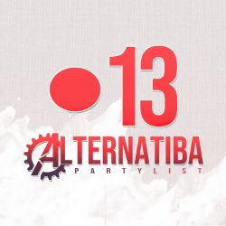
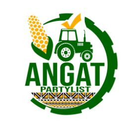
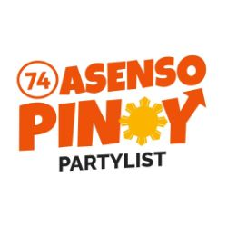
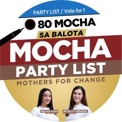
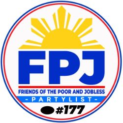

Party List Groups
Terms: 3 years, representatives may be nominated by an elected party or organization for a
maximum of 3 consecutive terms
Function: Congress holds legislative power, except to the extent reserved to the people by the
provision on initiative and referendum. The Senate is the upper house of Congress while the House of
Representatives is the lower house.
There are two kinds of lower house members: 80% of them represent legislative districts and the
remaining 20% of them represent party-list groups. Party-list representatives enjoy the same powers and
benefits as district representatives but are expected to legislate toward the interests of their sector
or party.
The incoming 19th Congress will have 316 representatives, 63 for party-list and 253 for legislative
districts.
Qualifications:
1. Must be any of the following registered organized groups:
• Sectoral party – the group’s principal advocacy pertains to the special interests and concerns of
the following sectors: labor, peasant, fisherfolk, urban poor, indigenous cultural communities,
elderly, handicapped, women, youth, veterans, overseas workers, and professionals
• Sectoral organization – the group is bound together by similar physical attributes or
characteristics, employment, interests, or concerns
• Political party – the group advocates an ideology or platform, principles and policies for the
general conduct of the government, which regularly nominates and supports certain of its leaders and
members as candidates for public office
2. Must not be a religious sect or denomination, organization, or association organized for religious
purposes
3. Must not advocate violence or unlawful means to seek its goalse
4. Must not be a foreign party or organization
5. Must not receive support from any foreign government, foreign political party, foundation, and
organization
6. Must not violate or fail to comply with laws, rules, or regulations relating to elections
7. Must not declare untruthful statements in its petition
8. Has not ceased to exist for at least 1 year or has not failed to participate in the last 2 preceding
elections
9. Has not failed to obtain at least 2% of the votes cast under the party-list system in the 2 preceding
elections
Party List Groups
| Image | Short Name | Long Name |
|---|---|---|
| 1.KAMALAYAN | KALIPUNAN NG MARALITA AT MALAYANG MAMAMAYAN, INC. | |
| 2. KM NGAYON NA | KILOS MAMAMAYAN NGAYON NA | |
| 3. PSIS | PHILIPPINE SOCIETY FOR INDUSTRIAL SECURITY | |
| 4. AGAP | AGRICULTURAL SECTOR ALLIANCE OF THE PHILIPPINES | |
| 5. KABAYAN | KABALIKAT NG MAMAMAYAN | |
| 6. HOME OWNER | HOME OWNERS, AND MARGINALIZED EMPOWERMENT THROUGH OPPORTUNITIES WITH NEIGHBORHOOD ECONOMIC RELIABILITY | |
| 7. KAPUSO-PM | KABALIKAT PATUNGO SA UMUUNLAD NA SISTEMATIKO AT ORGANISADONG PANGKABUHAYAN MOVEMENT | |
| 8. PDP CARES | PDP CARES FOUNDATION, INC. | |
| 9. MARVELOUS TAYO | NOBLE ADVANCEMENT OF MARVELOUS PEOPLE OF THE PHILIPPINES INC. | |
| 10. AKO OFW | ADVOCATES AND KEEPERS ORGANIZATION OF OFWS, INC. | |
| 11. UNITED SENIOR CITIZEN | UNITED SENIOR CITIZENS KOALITION NG PILIPINAS, INC. | |
| 12. WOW PILIPINAS | WOW PILIPINAS MOVEMENT | |
|  | 13. ALTERNATIBA | ALTERNATIBA NG MASA |
| 14. 1-RIDER PARTYLIST | ANG BUKLOD NG MGA MOTORISTA NG PILIPINAS | |
| 15. 1-CARE | 1ST CONSUMERS ALLIANCE FOR RURAL ENERGY, INC. | |
| 16. ABP | ANG BUMBERO NG PILIPINAS | |
| 17. AKO MUSIKERO | AKO MUSIKERO ASSOCIATION, INC. | |
| 18.AKO BICOL | AKO BICOL POLITICAL PARTY | |
| 19. PRAI | PHILIPPINE NATIONAL POLICE RETIREES ASSOCIATION, INC. | |
| 20. 4PS | PAGTIBAYIN AT PALAGUIN ANG PANGKABUHAYANG PILIPINO | |
| 21. MAAGAP | MOVEMENT OF ACTIVE APOSTOLIC GUARDIANS ASSOCIATION OF THE PHILIPPINES | |
| 22. ABANTE PILIPINAS | AVID BUILDERS OF ACTIVE NATION'S CITIZENRY TOWARDS EMPOWERED PHILIPPINES | |
| 23. AKTIBONG KAAGAPAY | AKTIBONG KAAGAPAY NG MGA MANGGAGAWA | |
| 24. ALSA BISAYA | ALSA BISAYA | |
| 25. PROBINSYANO AKO | PROBINSYANO AKO | |
| 26. YACAP | YOU AGAINST CORRUPTION AND POVERTY | |
| 27. MAGDALO | MAGDALO PARA SA PILIPINO PARTYLIST | |
| 28. ACT-CIS | ANTI-CRIME AND TERRORISM COMMUNITY INVOLVEMENT AND SUPPORT, INC. | |
| 29. HUGPONG FEDERAL | HUGPONG FEDERAL MOVEMENT OF THE PHILIPPINES, INC. | |
| 30. TGP | TALINO AT GALING NG PINOY | |
| 31. ONE COOP | ONE COOP | |
| 32. BARKADAHAN | BARKADAHAN PARA SA BANSA | |
| 33. DUMPER PTDA | DUMPER PHILIPPINES TAXI DRIVERS ASSOCIATION, INC. | |
| 34. MALABUNG | MALABUNG WORKERS PARTY | |
| 35. BH (BAGONG HENERASYON) | BH BAGONG HENERASYON | |
| 36. AKMA-PTM | AKSYON MAGSASAKA-PARTIDO TINIG NG MASA | |
| 37. IPATUPAD | IPATUPAD FOR WORKERS INC. | |
| 38. PINUNO | PINATATAG NA UGNAYAN PARA SA MGA OPORTUNIDAD SA PABAHAY NG MASA | |
| 39. LPGMA | LPG MARKETERS ASSCIATION, INC. | |
| 40. CLICK PARTY | COMPUTER LITERACY, INNOVATION CONNECTIVITY AND KNOWLEDGE, INC. | |
| 41. TODA | TOWARDS DEVELOPMENT AND ACTION | |
| 42. BHW | BARANGAY HEALTH WELLNESS PARTY | |
| 43. MALASAKIT@BAYANIHAN | MALASAKIT AT BAYANIHAN FOUNDATION, INC. | |
| 44. ABS | ARTS BUSINESS AND SCIENCE PROFESSIONALS | |
| 45. PASAHERO PARTYLIST | PASSENGERS AND RIDERS ORGANIZATION, INC. | |
|  | 46. ANGAT | AGRIKULTURA NGAYON GAWING AKMA AT TAMA |
| 47. SOLID-CHANGE | SOLID MOVEMENT TOWARDS COMPREHENSIVE CHANGE | |
| 48. BICOL SARO | BICOL SARO | |
| 49. OFW | ONE FILIPINOS WORLDWIDE COALITION PARTYLIST | |
| 50. ANG PROBINSIYANO | ALYANSA NG MGA MAMAMAYANG PROBINSIYANO | |
| 51. ANAKALUSUGAN | ALAGAAN NATIN ATING KALUSUGAN | |
| 52. PBA | PUWERSA NG BAYANING ATLETA | |
| 53. PEACE | PHILIPPINE EDUCATORS ALLIANCE FOR COMMUNITY EMPOWERMENT | |
| 54. P3PWD | KOMUNIDAD NG PAMILYA PASYENTE AT PERSONS WITH DISABILITIES | |
| 55. S.M.I.L.E | SAMAHAN NG MANGGAGAWA SA INDUSTRIYA NG LIVE EVENTS | |
| 56. AAMBIS-OWA | ANG ASOSASYON SANG MANGUNGUMA NGA BISAYA - OWA MANGUNGUMA, INC. | |
| 57. BUTIL | BUTIL FARMER'S PARTY | |
| 58. LUNAS | LUNGSOD AASENSO INC. | |
| 59. ANG KOMADRONA | ANG KOMADRONA | |
| 60. KABAKA | KABALIKAT NG BAYAN SA KAUNLARAN | |
| 61. SAGIP | SOCIAL AMELIORATION & GENUINE INTERVENTION ON POVERTY | |
| 62. ANG KABUHAYAN | ANG KABUHAYAN PARTYLIST | |
| 63. AKO I.P. | ANG KOALISYON NG INDIGENOUS PEOPLE | |
| 64. PHILRECA | PHILIPPINE RURAL ELECTRIC COOPERATIVES ASSOCIATION, INC. | |
| 65. BABAE AKO | BABAE AKO PARA SA BAYAN | |
| 66. KB | KUSOG BIKOLANDIA | |
| 67. GABRIELA | GABRIELA WOMEN'S PARTY | |
| 68. KALINGA | KALINGA-ADVOCACY FOR SOCIAL EMPOWERMENT AND NATION-BUILDING THROUGH EASING POVERTY, INC. | |
| 69. STL | SAMAHAN NG TOTOONG LARONG MAY PUSO FOUNDATION | |
| 70. RECOBODA | RURAL ELECTRIC CONSUMERS AND BENEFICIARIES OF DEVELOPMENT AND ADVANCEMENT, INC. | |
| 71. ANGAT PINOY | NAGKAKAISANG PILIPINO PARA SA PAG-ANGAT NG MARALITANG MANILENO | |
| 72. ANAC-IP | ANG NATIONAL COALITION OF INDIGENOUS PEOPLE ACTION NA! INC. | |
| 73. DIWA | DEMOCRATIC INDEPENDENT WORKERS ASSOCIATION | |
|  | 74. ASENSO PINOY | ASENSO PINOY |
| 75. PPP | PILIPINAS PARA SA PINOY | |
| 76. PAMILYA MUNA | ANG PAMILYA MUNA | |
| 77. AYUDA SANDUGO | MINDORO SANDUGO PARA SA KAUNLARAN, INC. | |
| 78. BUKLOD FILIPINO | PINAGBUKLOD NA FILIPINO PARA SA BAYAN | |
| 79. BTS | BAYANING TSUPER | |
|  | 80. MOCHA | MOTHER FOR CHANGE |
| 81. ACT TEACHERS | ACT TEACHERS PARTY-LIST | |
| 82. ALONA | ALLIANCE OF ORGANIZATIONS, NETWORKS & ASSOCIATIONS OF THE PHILIPPINES, INC. | |
| 83. KABALIKAT | KABALIKAT NG HUSTISIYA NG NAGKAKAISANG MANILENO | |
| 84. ALIF | ANG LABAN NG INDIGINONG FILIPINO | |
| 85. 1-UTAP BICOL | ONE UNIFIED TRANSPORT ALLIANCE OF THE PHILIPPINES BICOL REGION | |
| 86. TINGOG | TINGOG SINIRANGAN | |
| 87. H.E.L.P. PILIPINAS | HEALTH, EDUCATION, LIVELIHOOD PROGRAM OF THE PHILIPPINES | |
| 88. TUCP | THE TRADE UNION CONGRESS PARTY | |
| 89. PTA | PARENTS TEACHERS ALLIANCE | |
| 90. AGIMAT | AGIMAT NG MASA | |
| 91. KONTRA BROWNOUT | NATIONAL ASSOCIATION OF ELECTRICITY CONSUMERS FOR REFORMS, INC. | |
| 92. TULUNGAN TAYO | TULUNGAN TAYO | |
| 93. DUTERTE YOUTH | DUTERTE YOUTH PARTY-LIST | |
| 94. ABEKA | ABE KAPAMPANGAN | |
| 95. KABATAAN | KABATAAN PARTYLIST | |
| 97. ACTS-OFW | ACTS OVERSEAS FILIPINO WORKERS COALITION OF ORGANIZATIONS | |
| 98. RAM | REBOLUSYONARYONG ALYANSANG MAKABANSA | |
| 99. USWAG ILONGGO | USWAG ILONGGO PARTY | |
| 100. AKO BISAYA | AKO BISAYA PARTYLIST | |
| 101. KAPAMILYA | KAPAMILYA NG MANGGAGAWANG PILIPINO | |
| 102. PUSONG PINOY | PUSONG PINOY | |
| 103. CWS | CONSTRUCTION WORKERS SOLIDARITY | |
| 104. SILBI | SAMAHANG ILAW AT BISIG | |
| 105. CIBAC | CITIZEN'S BATTLE AGAINST CORRUPTION | |
| 106. SUBANEN | SUBANEN PARTY-LIST | |
| 107. AKKK | ANG KABUHAYANG KAYANG KAYA | |
| 108. BG PARTY-LIST | BISAYA GYUD PARTY-LIST | |
| 109. PAMILYANG MAGSASAKA | PAMILYANG MAGSASAKA | |
| 110. COOP NATCCO | COOP NATCCO PARTY-LIST | |
| 111. FRONTLINERS ANG BIDA | FILIPINO RIGHTS PROTECTION ADVOCATES OF MANILA MOVEMENT | |
| 112. KASAMA | KASAMA REGIONAL POLITICAL PARTY | |
| 113. AKO BISDAK | AKO BISDAK - BISAYANG DAKO (AB-BD), INC. | |
| 114. GP PARTY | GALING SA PUSO PARTY | |
| 115. BAHAY | BAHAY PARA SA PAMILYANG PILIPINO, INC. | |
| 116. MAGSASAKA | MAGKAKASAMA SA SAKAHAN KAUNLARAN | |
| 117. MARINO | MARINO SAMAHAN NG MGA SEAMAN, INC. | |
| 118. UNITED FRONTLINERS | UNITED FRONTLINERS OF THE PHILIPPINES | |
| 119. L.O.G.R.O. KUSINERO | AANGAT KUSINERONG PINOY | |
| 120. BPO | BANGON PHILIPPINE OUTSOURCING PARTYLIST | |
| 121. ABANG LINGKOD | ABANG LINGKOD INC. | |
| 122. KUSUG TAUSUG | KUSUG TAUSUG | |
 |
123. PLM | PARTIDO LAKAS NG MASA |
| 124. OK PARTYLIST | MORO AKO - OK PARTY-LIST | |
| 125. A TEACHER | ADVOCACY FOR TEACHER EMPOWERMENT THROUGH ACTION, COOPERATION AND HARMONY TOWARDS EDUCATIONAL REFORMS | |
| 126. PASADA-CC | PILIPINO SOCIETY AND DEVELOPMENT ADVOCATES COMMUTER-CONSUMER | |
| 127. OFW FAMILY | OFW FAMILY CLUB, INC. | |
| 128. ANGKLA | ANGKLA: ANG PARTIDO NG MGA PILIPINONG MARINO, INC. | |
| 129. COCOMAN | PARTIDO COCOMAN | |
| 130. ACT AS ONE | ACT AS ONE PHILIPPINES | |
| 131. AIA | AKO ILOCANO AKO | |
| 132. TRABAHO | TAGAPAGTAGUYOD NG MGA REPORMA AT ADHIKAING BABALIKAT AT HAHANGO SA MGA OPORTUNIDAD PARA SA MGA PILIPINO | |
| 133. PATROL | PUBLIC SAFETY ALLIANCE FOR TRANSFORMATION AND RULE OF LAW INC. | |
| 134. AKO PADAYON | AKO PADAYON PILIPINO PARTY LIST | |
| 135. ABONO | ABONO PARTYLIST | |
| 136. MANILA TEACHERS | MANILA TEACHER'S SAVINGS AND LOAN ASSOCIATION, INC. | |
| 137. KOOP-KAMPI | KOOPERATIBA-KAPISANAN NG MAGSASAKA NG PILIPINAS | |
| 138. MAYPAGASA | KILUSANG MAYPAGASA | |
| 139. PVAID | PEOPLE'S VOLUNTEER AGAINST ILLEGAL DRUGS, INC. | |
| 140. TUTOK TO WIN | TUTOK TO WIN | |
| 141. BAYAN MUNA | BAYAN MUNA | |
| 142. API | ABANTE PANGASINAN-ILOKANO PARTY | |
| 143. ARTE | ADVOCATES FOR RETAIL & FASHION, TEXTILE & TRADITION, EVENTS, ENTERTAINMENT & CREATIVE SECTOR | |
| 144. ASAP | ALAGAAN ANG SAMBAYANANG PILIPINO | |
| 145. BUNYOG | BUNYOG (PAGKAKAISA) | |
| 146. AKBAYAN | AKBAYAN CITIZEN'S ACTION PARTY | |
| 147. DAMAYAN | DAMAYAN PARA SA REPORMA TUNGO SA INKLUSIBO AT LAGANAP NA MGA OPORTUNIDAD NGAYON | |
| 148. WIFI | WALANG IWANAN SA FREE INTERNET INC. | |
| 149.CANCER PARTY LIST | CANCER ALLEVIATION NETWORK ON CARE, EDUCATION AND REHABILITATION, INC. | |
| 150. 1-ANG EDUKASYON | UNA ANG EDUKASYON | |
| 151. UFCC | UNITED FILIPINO CONSUMERS AND COMMUTERS, INC. | |
| 152. AGRI | AGRI-AGRA NA REPORMA PARA SA MAGSASAKA NG PILIPINAS | |
| 153. MAHARLIKA | MAHARLIKANG PILIPINO PARTY | |
| 154. ANAKPAWIS | ANAKPAWIS PARTYLIST | |
| 155. 1TAHANAN | 1 TAHANAN, INC. | |
| 156. TURISMO | TURISMO ISULONG MO | |
| 157. APEC | ASSOCIATION OF PHILIPPINE ELECTRIC COOPERATIVES | |
| 158. SENIOR CITIZENS PARTYLIST | COALITION OF ASSOCIATIONS OF SENIOR CITIZENS IN THE PHILIPPINES, INC | |
| 159. AASENSO | ATING AGAPAY SENTRONG SAMAHAN NG MGA OBRERO, INC. | |
| 160. AMIN | ANAK MINDANAO PARTYLIST | |
| 161. 1-PACMAN | 1-PATRIOTIC COALITION OF MARGINALIZED NATIONALS INC. | |
| 162. ABB-NFCPI | NATIONAL FIREMEN'S CONFEDERATION OF THE PHILIPPINES | |
| 163. AN WARAY | AN WARAY PARTY LIST | |
| 164. AP PARTYLIST | ALLIANCE OF PUBLIC TRANSPORT ORGANIZATION, INC. | |
 |
165. AKAP PINOY | AKSYON TUNGO SA ASENSO AT PAGSULONG NG PILIPINO |
| 166. BUHAY | BUHAY HAYAAN YUMABONG | |
| 167. ARISE | ALLIANCE FOR RESILIENCE, SUSTAINABILITY AND EMPOWERMENT | |
| 168. IWI | IGOROT WARRIORS INTERNATIONAL, INC. | |

|
169. ANG TINIG NG SENIORS | ANG TINIG NG SENIORS CITIZENS SA FILIPINAS, INC. |
| 170. LBP | LINGKUD BAYANIHAN PARTY | |
| 171. IPEACE EPANAW | IPEACE EPANAW PARTY -LIST (MINDANAO INDIGENOUS CONFERENCE FOR PEACE AND DEVELOPMENT) | |
| 172. APAT-DAPAT | ANG PROGRAMANG AASENSO TAUMBAYAN - DREAM, ACT, PARTICIPATE AND ADVOCATE FOR SUSTAINABLE TRANSFORMATION | |
| 173. UMA ILONGGO | UGYON MANGUNGUMA, MANGINGISDA KAG MAMUMUGON NGA ILONGGO | |
| 174. AYUDA | AYUDA SA MAY KAPANSANAN | |
| 175. SAMBAYANAN | ABANTE SAMBAYANAN | |
| 176. AKO BREEDER | AKO BREEDER PARTY-LIST | |
|  | 177. FPJ | FRIENDS OF THE POOR AND JOBLESS PARTY-LIST |
 |
178. LIBRO | LABAN NG ISANG BAYAN PARA SA REPORMA AT OPORTUNIDAD |
Brief History and Mandates
Representatives for the youth and labor sectors were first elected to the legislature in the time of the
late dictator Ferdinand Marcos who installed a unicameral system that was abolished following his ouster.
After the 1986 People Power Revolution and the return to a bicameral Congress, sectoral representatives
remained in the House but were appointed by the president from 1987 to 1998.
The party-list system is intended to democratize political power by giving political parties that cannot win
in legislative district elections a chance to win seats in the House of Representatives. The 1987
Constitution mandates that party-list representatives shall constitute 20% of all seats in the House of
Representatives.
On May 11, 1998, the first election for party-list representation was held simultaneously with the national
elections. According to Comelec’s rules then, groups that received 2% of the total party-list votes earned
one party-list seat in Congress, with additional seats for every 2% thereafter.
However, the Supreme Court has twice changed the formula for determining winning party-list groups: first in
2000 and then in 2009.
The high court has also gone back and forth on what constitutes a party-list group, originally ruling in
2001 that only those from the marginalized and underrepresented sectors could participate in the system but
reversing this in 2013, deciding that organizations “do not need to organize along sectoral lines and do not
need to represent ‘any marginalized and underrepresented’ sector.”
In its 2013 ruling Atong Paglaum, Inc. vs. Comelec, the Supreme Court laid down the parameters currently
used for party-list elections:
- Three different groups may participate in the party-list system: (a) national parties or organizations, (b) regional parties or organizations, and (c) sectoral parties or organizations
- National parties or organizations and regional parties or organizations do not need to organize along sectoral lines and do not need to represent any "marginalized and underrepresented" sector
- Political parties can participate in party-list elections provided they register under the party-list system and do not field candidates in legislative district elections. A political party, whether major or not, that fields candidates in legislative district elections can participate in party-list elections only through its sectoral wing that can separately register under the party-list system. The sectoral wing is by itself an independent sectoral party and is linked to a political party through a coalition.
- Sectoral parties or organizations may either be "marginalized and underrepresented" or lacking in "well-defined political constituencies." It is enough that their principal advocacy pertains to the special interest and concerns of their sector. The sectors that are "marginalized and underrepresented" include labor, peasant, fisherfolk, urban poor, indigenous cultural communities, handicapped, veterans, and overseas workers. The sectors that lack "well-defined political constituencies" include professionals, the elderly, women, and the youth.
- A majority of the members of sectoral parties or organizations that represent the "marginalized and underrepresented" must belong to the "marginalized and underrepresented" sector they represent. Similarly, a majority of the members of sectoral parties or organizations that lack "well-defined political constituencies" must belong to the sector they represent. The nominees of sectoral parties or organizations that represent the "marginalized and underrepresented," or that represent those who lack "well-defined political constituencies," either must belong to their respective sectors or must have a track record of advocacy for their respective sectors. The nominees of national and regional parties or organizations must be bonafide members of such parties or organizations.
- National, regional, and sectoral parties or organizations shall not be disqualified if some of their nominees are disqualified, provided that they have at least one nominee who remains qualified.